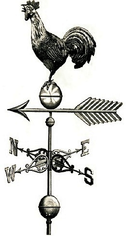

INDICATIONS
" Le changement apparaît lorsqu'un sujet devient ce qu'il est,
non lorsqu'il essaie de devenir ce qu'il n'est pas ". A. Beisser
non lorsqu'il essaie de devenir ce qu'il n'est pas ". A. Beisser
L'hypnose favorise l'amélioration et/ou la résolution de dysfonctionnements qu'ils soient biologiques, comportementaux, sociaux ou psychologiques. Dans tous les cas, quel que soit l'objectif du client, le praticien ne portera aucun jugement sur la demande dès lors que celle-ci soit dans le respect de l'éthique de la pratique de l'hypnose Ericksonienne et le respect de l'intégrité du client et/ou une tierce personne.
Des questions quant à votre objectif, n'hésitez pas à m'en faire part au 06 60 25 13 68 ou sur la page CONTACT.
Des questions quant à votre objectif, n'hésitez pas à m'en faire part au 06 60 25 13 68 ou sur la page CONTACT.
Cette liste ne reste qu'un éventail de ce que peut favoriser l'hypnose Ericksonienne :
- le contrôle voir l'arrêt des dépendances physiques et/ou comportementales : toxicomanies (tabac, alcool, psychotropes, etc.), addiction au travail, sport, jeux, sexe, etc.
- soulagement de désordres somatiques, de douleurs chroniques et l'accompagnement de maladies et de leurs traitements.
- régulation des troubles du comportement : hyperactivité, impulsivité, agressivité, colère, etc.
- aide à l'apprentissage (mémorisation, dysgraphie, dyslexie, etc.)
- crise de vie, existancielle, de couple, etc.
- impact positif sur le déclin de l'humeur, démotivation, manque d'élan et d'envie, surmenage
- le passage d’étapes de vie : mutation, licenciement, retraite, séparation, divorce, deuil, etc.
- travail sur : confiance en soi, estime de soi, dévalorisation, perte de repère narcissique, timidité, maitrise de soi, procrastination, concentration, etc.
- peurs, traumatismes psychologiques ou physiques, accidents de la vie, chocs et blocages émotionnels, phobies, etc.
- migraines, troubles digestifs, uro-génitaux, problèmes dermatologiques, rhumatismes, accouphènes, asthme, etc.
- troubles de la fonction sexuelle : éjaculation précoce ou anéjacultion, absence de désir, de plaisir, troubles de l’érection, dyspareunie, vaginisme, etc.
- préparation aux épreuves diverses (concours, épreuves, examens, compétitions)
- gestion du stress, de l'anxiété
- trouble des conduites alimentaires
- travail sur les croyances, les valeurs, l'identité
- troubles du sommeil
